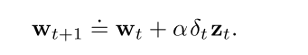
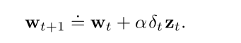
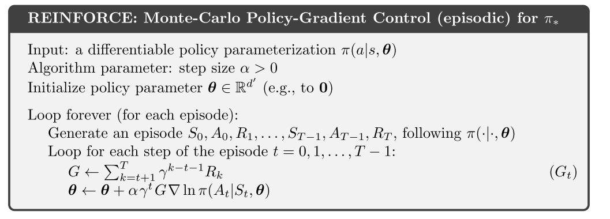
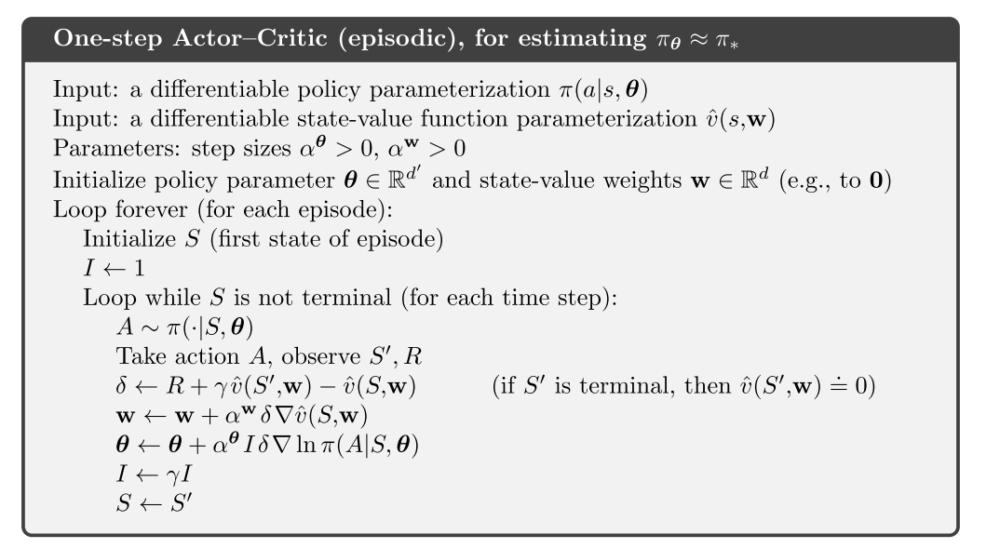
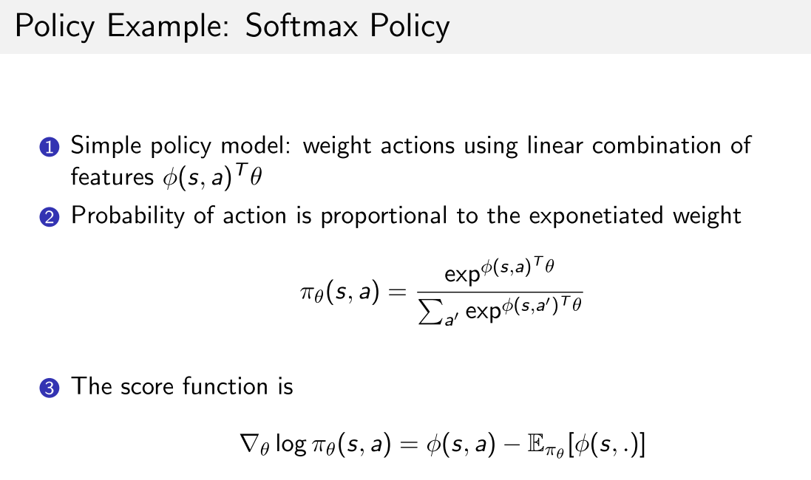
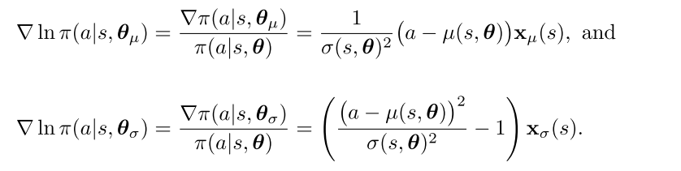
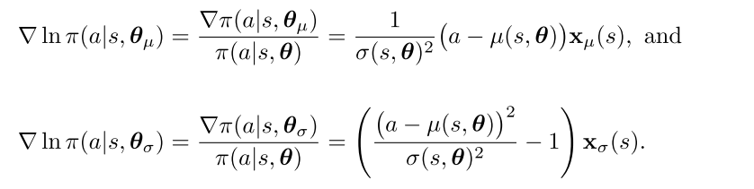

1 RLBook-函数近似
价值函数逼近是让状态s的估计值逼近某一个目标, 这里对于TD, MC, DP有不同的考虑
函数近似的问题:
- 近似价值函数的准确性,收敛性无法保证
- 一个状态的更新会影响其他状态
- 逼近函数的复杂程度, 越复杂的函数方差越大, 且倾向于收敛到局部最优
优化的终极目标是寻找更好的策略, 但是由于目前没有关于目标函数和价值函数的明确关系, 当前主要关注的是最小化俊芳价值误差.
1 on-policy 函数逼近
- on-policy在使用线性函数逼近的情况下, MC可以收敛
- on-poliicy函数逼近方法不满足策略改进定理
- n-step方法方差大
- 因为计算TD target需要更长的trajectory, 每一步都是有偏的, 随着离当前状态越来越远, 随机性的影响越大, 与当前时刻的差异越大, 方差越大.
- 连续环境设定下的函数逼近方法, 带折扣的公式表达是没有用的, 使用平均收益的差分半梯度算法有效, 可以在不影响策略排序的情况下去除gamma参数.
1.1 SGD
假设U是v的近似函数, 则SGD更新公式为
(1)

如果U是一个无偏估计, 那么当随时间减小满足随机近似条件时, w可以保证收敛到局部最优.
- MC是一个无偏估计, 所以可以保证收敛到局部最优
- TD或者DP的估计值是有偏的, 因为目标值依赖于当前权重w. 所以依赖于自举的梯度方法叫半梯度方法
- 在线性函数的情况下可以收敛
- 学习速率快
- 支持在线学习, 使其能够用于连续问题
在on-policy 线性函数逼近下, 如果当满足随机近似条件随时间减小
- MC收敛到全局最优
- TD收敛到TD不动点
- TD法渐进误差不超过MC方法最小误差的倍.
1.2 基于函数逼近的op-policy控制
半梯度sarsa算法
在连续环境设定下的函数逼近方法, 带折扣的公式表达是没有用的, 使用差分半梯度算法, 可以去除gamma参数.
当需要对任意策略进行排序时, 使用平均收益是一种有效的方法.

2 off-policy函数逼近
off-policy目前的挑战:
- 表格型: 更新的目标, 可以使用重要性采样解决
- 函数逼近: 更新的分布, 再次使用重要性采样把分布拉回on-policy策略的分布(在线性情况下); 或者寻找不依赖于任何特殊分布就能稳定的真实梯度方法.
off-policy函数逼近面临发散的问题
off-policy比on-policy有更大的方差.
2.1 半梯度off-policy方法
半梯度off-policy TD(0)算法, 使用重要性采样


半梯度off-policy 期望SARSA算法, 表格型RL不需要IS, 但是函数逼近时显然不行,但是没有很好的解决方案.

半梯度off-policy n-step sarsa, 需要IS
2.2 致命三要素
只要一个算法满足下列三个要素, 则面临不稳定和发散问题.
- Function approximation
- Bootstrapping
- O↵-policy training
2.3 贝尔曼误差及其不可学习性质
贝尔曼误差是TD误差的期望.
贝尔曼误差是不可学习的: 定义良好且在给定环境内在结构时可以计算, 但是不能从外部观测的动作/奖励/状态中得到, 则称其为不可学习的.
2.4 减小方差
off-policy比on-policy有更大的方差, 因为使用行动策略采样的样本可能和目标策略相关性不大.
但是这也是off-policy有更好的泛化性能的重要原因之一.
减小方差方法之一就是限制IS比值, 高方差意味着可能很大, 即步长会变得很大, 使得训练不稳定.
- 因为IS比值随着乘积项可能会变得很大也可能消失.
- 加权重要性采样有更小的方差.
- 树回溯法可以不使用IS进行off-policy学习.
- 另一个方法是, 允许目标策略部分地由行动策略决定. 这样目标策略不会离行动策略太远,而使IS比太大.
3 资格迹
统一MC和TD, 降低方差和偏差, 又有计算优势; 适用于分幕式和连续控制任务.
核心元素: 一个短期记忆向量, 资格迹, 以及相应的长期权重向量. 核心思想: 当参数w的一个分量参与计算并产生一个估计值时, 对应的z的分量会骤然升高, 然后逐渐衰减. 在迹衰减到0之前, 如果发现了非零的TD误差, 那么相应的w的分量就可以得到学习. 迹衰减参数决定了迹的衰减速率. 优势:
- 通过追踪迹向量, 不用存储n-step的状态, 也不用延迟到结束才能获得奖励信号, 还可以遇到一个状态后马上进行学习, 并影响之后的状态.
- 相比于TD, 增加了计算, 但是加快了学习速率. 特别是奖励延迟的任务.
- 增量式的后向视图
3.1 lambda-return
首先, n-step回报的计算如下:

回报结合任意步回报, 算每一种回报的加权和, 降低方差和偏差, 保证收敛.

上式前面乘上保证权重和为1.
回报也有迭代更新公式
3.2 TD(lambda)
同意了前向分析和后向计算的优势. 主要有三点改进:
- 单步更新, 而不是在结束时才更新
- 计算量平均在整个时间轴上, 而不是在一个episode结束
- 可以使用离散和连续任务.
函数逼近的:
- 资格迹是一个和权值向量同维度的向量;
- w在整个训练周期进行更新; z是一个短期记忆, 通常小于episode长度.
- 资格迹辅助学习, 唯一的作用是影响权值向量.
资格迹更新过程:
相当于特征向量的贡献的累积(线性逼近时, v的梯度是).
当一个reinforcing事件出现时: 我们认为这些贡献"痕迹"展示了权值向量的对应分量有多少"资格"可以接受学习过程引起的变化. 我们关注的reinforcing事件单步TD误差.


则最终的算法如下:
3.2 改进
实际上考虑的是之前状态(梯度)对当前TD误差计算的影响.
但是对于连续性或者太长的任务, 效果不大, 可以使用 n步截断的

对于在线式的, 为了在线生成数据, 改进方法是: 每一步收集到数据增量的同时, 回到当前episode的开始, 重新更新
3.3 SARSA
n-step版本的q值形式为:
则权重更新方式为:

因此, 总结下SARSA的核心公式:
3.4 带控制变量的off-policy 资格迹
需要使用重要性采样.
对于状态值函数估计的方法:

 

对于Q函数估计的方法:

在off-policy 资格迹中, 即使也涉及到自举. 所以面临致命三要素问题:
- off-policy
- 函数逼近
- 自举
off-policy 资格迹只解决了off-policy 两个问题中的一个:
- 纠正了目标的期望值
- 但是没有解决, 更新的数据和策略分布与目标策略不匹配问题.
4 PG
pg算法优势:
- 选择概率的动作更平滑, 更强的收敛保证
- 适用于连续动作和离散动作.
- 可以产生一种随机策略, 可以以任意概率选择动作.
- 策略参数化形式的选择有时意味着我们可以引入正确的先验.
问题:
- 样本效率低, on-policy
- 高方差导致学习慢
- 性能函数即依赖于动作的选择, 也依赖于选择动作时的状态分布, 但是他们都受策略参数的影响.
- 策略参数对动作和奖励的影响可以容易计算, 但是对状态分布的影响很难估计, 因为其依赖于环境.
策略梯度定理可以从理论上确定了如何估计策略参数对状态分布的影响:
4.1 REINFORCE
纯MC方法:
- 收敛性保证, 无偏
- 收敛到局部最优
- 高方差导致学习慢
降低方差: 加入基线
- 加入基线不会改变梯度, 也没引入偏差
- 但是明显降低方差, 所以可以提高学习效率
- 一般使用状态价值v表示基线, 因为它估计的是某状态下所有动作的均值, 很公平
- 虽然学习了v值, 但是不认为它是AC算法, 因为它没有使用自举操作.

AC
- 一般设计值函数的自举操作, 引入偏差, 但是明显降低方差
- 可以在线增量式学习, 适用于持续性问题.
策略参数化方法
- 离散: softmax分布中采样
- 连续: 从高斯分布中采样. 一般用线性函数逼近均值, 用exp函数逼近标准差

 
